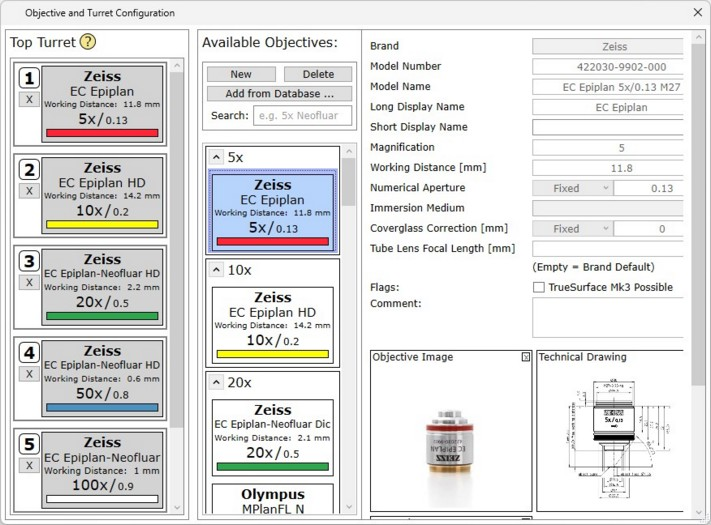

|
物镜转塔配置
|

可用物镜
将物镜分配到转塔槽位之前，必须将物镜添加到可用物镜列表中：
物镜数据库
可使用 从数据库添加... 将物镜添加到可用物镜列表中。
可以在大型物镜数据库中搜索物镜。
创建新物镜
如果物镜未列出，可以使用"新建"按钮创建一个新物镜。
提示：请至少输入正确的放大倍率和工作距离，因为其他软件组件依赖此信息。
转塔槽位分配
可简单地从可用物镜列表中拖放物镜到转塔槽位中。
要从转塔槽位中移除物镜，只需按下槽位号旁边的 X。
按帮助按钮以获取推荐的槽位分配。
如果配置了新物镜，请不要忘记使用 物镜视频配置 进行校准。
如果更改了物镜配置，请不要忘记补偿物镜偏移；只需打开 物镜补偿向导。